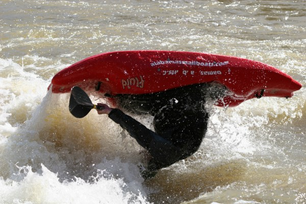

Locust Fork of the Warrior River, Upper Section
| Lane Wright on the 5' falls at 2.8' (photo courtesy Josh Tidwell) Watch for camera angle vertigo ;) |
|
| Winfred Stayton on his way over to the wet side in 1994. He is on the drop just below the first 5' slide in the short canyon section on the upper Locust. |
Locust Fork of the Warrior River, Lower Section
| A very early rogue sighting at House Rock. That might be Dave B, Murray, and Rob Welch in the eddy but I'm not sure. No Helmets required in 1994, evidently. | |
| A beautiful cold day, Tilt-a-Whirl rapid at 2.7'. | |
| Murray Carroll tempting fate by running to the right of the pillow rock at the bottom of the first drop of Double Trouble. Note his manly lack of helmet. This is back when the boats were big and the men were men. | |
| Jeff Bowen says "what the heck" as he rides out the first drop of Double Trouble next to, rather than in, his boat. December 1993. | |
| Charlie Stotts in truly rare form way back in 1992 on Powell Falls. Them are muscles and that is a whoppin' big foam block, ladies and gentlemen. Not a small boat to be seen back then. | |
| Murray and Kay Carroll looking good at the bottom of Powell Falls, 2.6', February 1993. | |
|  | Jeremy Adkins at Ender Hole below Powell Falls. |
| Jeremy Adkins, inverted once again. |